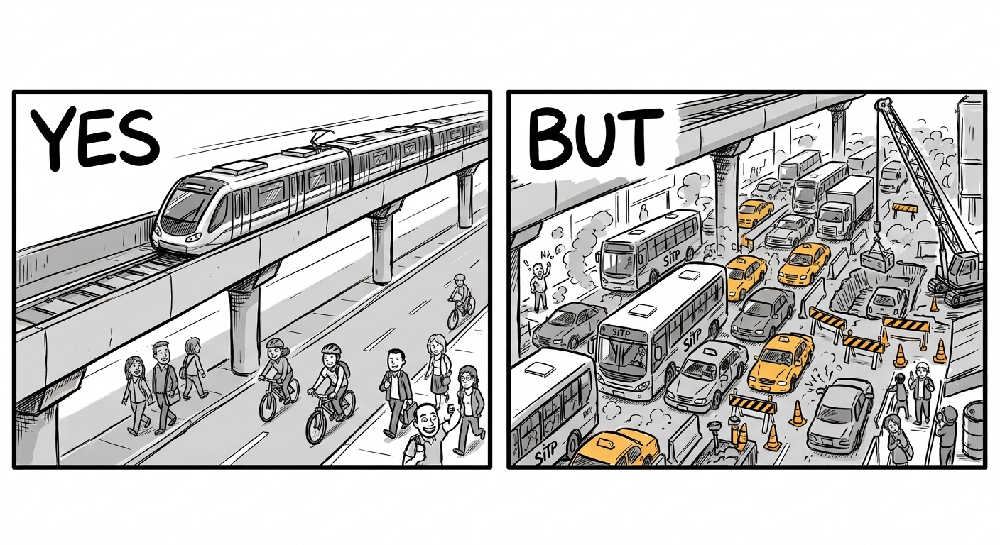

ESTACIÓN: TRANCONES ★
ESTACIÓN: TRANCONES ★
ESTACIÓN: TRANCONES ★

PARA SOBREVIVIR A UN TRANCON, RECUERDA:
Paciencia
Salir con anticipación
Evitar horas pico
Paciencia
Usar aplicaciones de tráfico
Seguridad en la vía
Paciencia...
← VOLVER AL BUS